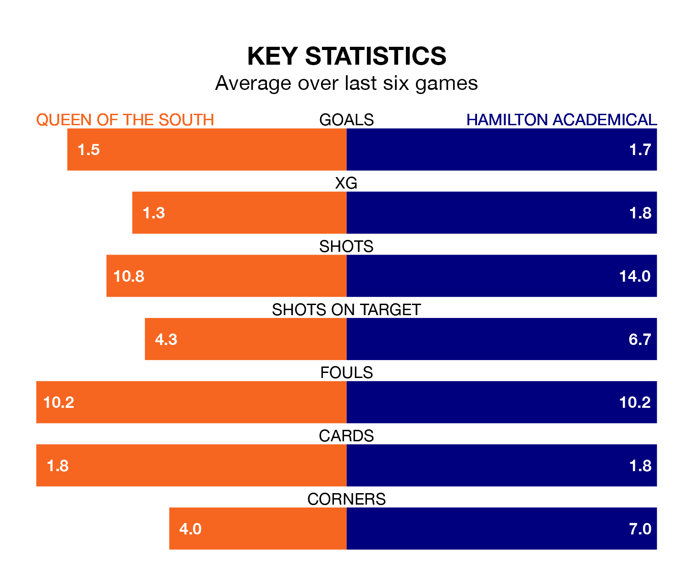

Saturday's match between Queen of the South and Hamilton Academical promises to be one for the neutrals, as two of League One's most free-scoring sides go head-to-head.
Ahead of the game at Palmerston Park, the Doonhamers and the Accies sit joint-fourth and second in the goal-scoring charts, with 30 and 44 goals respectively.
Striker Gavin Reilly leads the way for the home side, having bagged seven goals in their 22 games to date.
And Kevin O'Hara has been the main man in the opponents' penalty box for Hamilton Academical, with 10 goals.
With Ryan Fulton between the sticks, Hamilton Academical can rely on one of the league's safest pair of hands. He has kept six clean sheets in his 12 appearances this season, and only one other 'keeper – Falkirk's Sam Long – has been able to prevent the opposition scoring on more occasions in League One.
In Queen of the South's net, Gordon Botterill has two clean sheets in nine games. He has conceded a goal every 82 minutes, 80% more often than the 148 minutes between goals for Fulton.
The Accies are second in the table after 21 games, of which they have won 13 and drawn six, earning 45 points.
The Doonhamers are three places behind the away side in fifth, with eight wins and three draws putting them on 27 points.
In the last 10 years, Queen of the South and Hamilton Academical have played each other on 10 occasions. Queen of the South won one of them, Hamilton Academical seven, and they drew twice.
On average, the Doonhamers scored 0.8 goals and the Accies 1.9 in those matches.
Their last meeting was on December 2, when Hamilton Academical won 5-0 at home.
The hosts are in reasonable form in League One, with three wins and two draws from their last six games.
With two wins and three draws over that period, Hamilton Academical's form is slightly worse – they have taken nine points from 18, compared to Queen of the South's 11.
Queen of the South's last match was on January 27, a 2-0 win against Cove Rangers, with Jack Brydon and Kyle Doherty getting the goals for the Doonhamers.
Hamilton Academical drew 1-1 with Montrose last time out, also on January 27, with O'Hara on the scoresheet.
Saturday's match will be refereed by Alan James Muir, who has taken charge of one League One game so far this season, issuing one red card and booking five players. He has awarded one penalty.
He is yet to oversee a match featuring either Queen of the South or Hamilton Academical this season.
Updated: 10:40 (UTC), 01/02/24